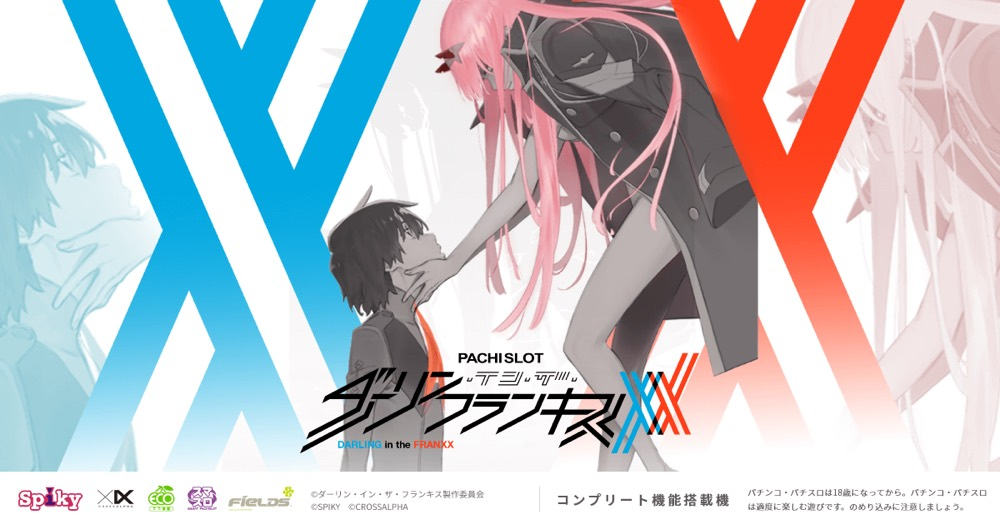

L ダーリン・イン・ザ・フランキス
2種類のCZから疑似BONUSへ。10G＋αのボーナス高確と比翼BEATSをループする。
- 導入
- 2025年8月
- メーカー
- スパイキー
- 分類
- パチスロ
主要スペック
5Gのコネクトチャンス／10Gのココロチャンスから初当りBONUSを目指し、ボーナス高確『ダーリン・イン・ザ・フランキス』へ。3種類の高確中BONUS、比翼BEATS、連れ出しまでを専用画面で体験できます。
- コネクトチャンスは5G・成功期待度約46%
- ボーナス高確は10G＋α・ボーナス約1/10.4
- 比翼BEATSは2〜4G・継続約75〜94%
L ダーリン・イン・ザ・フランキスの見どころと計算条件
5Gのコネクトチャンス／10Gのココロチャンスから初当りBONUSを目指し、ボーナス高確『ダーリン・イン・ザ・フランキス』へ。3種類の高確中BONUS、比翼BEATS、連れ出しまでを専用画面で体験できます。
スマスロ ダリフラを数字で早分かり
CZ、3種類の初当りBONUS、ボーナス高確、4種類の高確中BONUS、比翼BEATS、連れ出しを機種専用で記録します。
30秒で分かるスマスロ ダリフラ
CZから疑似BONUSを取り、10G＋αのボーナス高確と比翼BEATSでゲーム数とBONUSをつなぐボーナス連タイプです。
こんな遊び方に向いている
- CZ最終PUSHでBONUS当落を決めたい
- 高確中のBONUS種類を開きたい
- 比翼BEATSのレベルと上乗せを重ねたい
遊ぶ前に確認したいこと
- CZ・BONUS初当り、純増、主要ゲーム数は公開値
- 比翼BEATSのレベル別継続率を反映
- 未公表の選択率は体験用代表値
2種類のCZから初当りBONUSへ
コネクトチャンスは5GのST型CZで、成功期待度約46%。小役成立でレベルアップとゲーム数再セットを行います。ココロチャンスは10G・成功期待度約69%で、成功後はボーナス高確ゲーム数を上乗せしてBONUSへ進みます。
通常時のBONUS直撃も含め、専用画面ではCZを最後まで進めて最終PUSHでBONUS当落を開きます。
初当りBONUSは3種類
レギュラーボーナスは約40枚で、約22%でダーリン・イン・ザ・ボーナスへ昇格。ダーリン・イン・ザ・ボーナスは約100枚で、消化後にボーナス高確へ進みます。
エピソードボーナスは約200枚で、消化後は比翼BEATSのレベルMAXXからボーナス高確へ進む強力な入口です。
10G＋αのボーナス高確
ダーリン・イン・ザ・フランキスは10G＋αのボーナス高確率で、ボーナス確率は約1/10.4。小役成立時に即ジャッジし、レア役ならBONUS濃厚です。
高確中はフランクスボーナス約60枚＋α、ダーリン・イン・ザ・ボーナス約100枚、EX約200〜3000枚、エピソード約200枚を個別に表示します。
比翼BEATSと連れ出し
比翼BEATSはボーナス高確ゲーム数を上乗せするST型特化ゾーン。レベル1は2G・約75%、レベル2は3G・約88%、MAXXは4G・約94%で、上乗せまたはBONUS当選時にSTを再セットします。
フランクスボーナス中の連れ出しは、BONUS枚数がなくなるまでSTゲーム数をホールド。フランクス図柄停止で上乗せと60枚再セットを行う専用イベントとして記録します。
固定条件と簡略化する範囲
- 約30.8G/50枚・1,000円46枚貸し・5.2枚交換で固定
- 設定1〜6を均等抽選し、CZ・BONUS・ボーナス高確初当りは公開設定別値を使用
- CZ期待度、BONUS獲得目安、ボーナス高確率、比翼BEATS性能は公開値を優先
- CZ選択率、BONUS種別、連れ出し発生率など未公表部分は体験用代表値
- 19,000枚到達時はコンプリート表示
平均Gと投資目安の計算
掲載するダーリン・イン・ザ・フランキス初当り約1/343は設定1基準です。当サイトでは50枚あたり30.8G、1,000円46枚貸しの固定条件から、設定1基準の平均投資目安を約12,100円と計算します。
シミュレーターでは設定1〜6を均等抽選します。設定1〜6で公開されている初当り値を個別に使います。公開されていない特化ゾーン・上位到達率の設定差は加えません。 換金は5.2枚交換で固定し、結果とランキングに設定を表示します。
シミュレーション結果の見方
当るまでCZ・BONUS直撃・ダーリン・イン・ザ・フランキスまでのゲーム数
設定設定1・2・3・4・5・6から抽選された今回の設定
上位到達Beat Lv.MAXXとCLIMAXXへの到達
最終収支差枚と5.2枚交換の収支目安
結果は自動で「マイ記録」に保存され、同じ機種を何回試したか、最高収支、勝率をあとから確認できます。
簡易シミュレーターについて
CZ・BONUS直撃・ダーリン・イン・ザ・フランキス・CLIMAXXの流れを固定条件で体験できます。JavaScriptを有効にすると、この位置にシミュレーター、演出、マイ記録、機種別ランキングが表示されます。
結果は娯楽・確率理解のための参考表示です。金銭的価値や交換価値はなく、実際の勝敗や収支を保証しません。18歳未満の方の利用はお控えください。
スマスロ ダリフラのよくある質問
スマスロ ダリフラはどんな台？
5Gのコネクトチャンス／10Gのココロチャンスから初当りBONUSを目指し、ボーナス高確『ダーリン・イン・ザ・フランキス』へ。 コネクトチャンスは5G・成功期待度約46%が主な確認ポイントです。
スマスロ ダリフラの平均投資目安は？
設定1基準のダーリン・イン・ザ・フランキス初当り約1/343と、50枚あたり30.8G・46枚貸しの固定条件から、平均12,100円を目安として表示します。実際の設定や遊技状況で結果は変わります。
設定とゲームの流れはどう抽選する？
開始時に設定1・2・3・4・5・6から1つを均等抽選し、CZ・BONUS直撃、ダーリン・イン・ザ・フランキス、Beat Lv.MAXX、CLIMAXXの順で到達を判定します。設定は最終結果とランキングに表示します。
収支はどう計算する？
1,000円46枚貸し・5.2枚交換の固定条件で投資、換金、収支目安を計算します。実店舗の再プレイ、持ちメダル、端数処理は含みません。